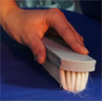
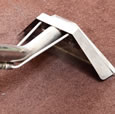
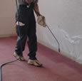

サービス一覧
タックのクリーニングサービスの全メニューです。タックの独自のインテリアクリーニングの技術をご覧ください
椅子のお手入れは、日ごろのメンテナンスだけでは限界があります。タックの熟練スタッフが美しくよみがえらせます。
お客様が大切にされているソファーの状態を把握した上で、熟練のスタッフが心をこめて作業にあたらせて頂きます。
オリジナルクリーニング「スチームプラスアルファ技法」を駆使して、熟練スタッフがカーペットの汚れに関するお悩みを解決。
ホコリや汚れが目立つブラインドは、思った以上に掃除が面倒。タックでは、超音波洗浄システムで羽の1枚1枚まで丸洗い。
タックは、プロによる丁寧な完全分解清掃。エアコン内の細部にたまった、カビやホコリまでキレイにすっきり落とします。
シャンデリア・パーテーションカーテンなどインテリアに関するクリーニングでしたら、なんなりとご相談ください。
椅子・ソファーの張替えのご要望にもお応えできます。破れ、変色、クッション性の低下など、椅子のリニューアルはおまかせください。
部分的でも全体でも、クリーニング感覚で敷いたままリフレッシュできます。